Pengertian Ekonomi
Ekonomi adalah studi tentang bagaimana individu dan masyarakat membuat pilihan untuk
mengalokasikan sumber daya terbatas guna memenuhi kebutuhan dan keinginan yang tidak terbatas, sering di tengah ketidakpastian informasi.
Kata "ekonomi" berasal dari Yunani "oikos" (rumah tangga) dan "nomos" (aturan), berarti "mengelola
rumah tangga." Ini bukan hanya tentang uang, tapi tentang keputusan rasional untuk
memaksimalkan kesejahteraan.
-
Pendekatan Ekonomi
- Ekonomi Positif: Deskripsi fakta "apa adanya" (misalnya, "inflasi naik 5% tahun ini").
- Ekonomi Normatif: Opini "apa yang seharusnya" (misalnya, "pemerintah harus turunkan pajak
untuk kurangi kemiskinan").
Mengapa Penting?
Ekonomi membantu pahami dunia: dari pilihan harian (apa makan malam?) hingga isu global seperti
ketidaksetaraan atau dampak media sosial pada informasi pasar. Contoh: Di era informasi, platform
seperti Instagram memengaruhi pilihan konsumen melalui review, mempengaruhi pasar.
-
Konsep Dasar Ekonomi
-
Kekurangan (Scarcity) dan Biaya Peluang: Sumber daya terbatas vs. wants tak terbatas; biaya
peluang adalah alternatif terbaik yang dikorbankan. Contoh: Dengan Rp100.000, beli makanan
berarti hilang kesempatan beli pakaian.
-
Faktor Produksi: Tanah, tenaga kerja, modal, kewirausahaan. Tambahan: Human capital
(keterampilan) untuk tingkatkan produktivitas.
-
Incentives dan Property Rights: Incentives motivasi perilaku (misalnya, bonus kerja); property rights
lindungi hak milik untuk dorong investasi.
-
Division of Labor/Specialization:Pecah tugas untuk efisiensi, seperti di pabrik mobil.
-
Technology dan Productivity: Inovasi tingkatkan output per input. Contoh: Aplikasi pertanian di
Indonesia tingkatkan hasil panen.
-
Permintaan dan Penawaran
-
Produksi, Konsumsi, Distribusi: Dari pembuatan hingga penggunaan.
-
Spesialisasi dan Perdagangan: Fokus keahlian lalu tukar. Contoh: Indonesia ekspor minyak sawit,
impor mesin.
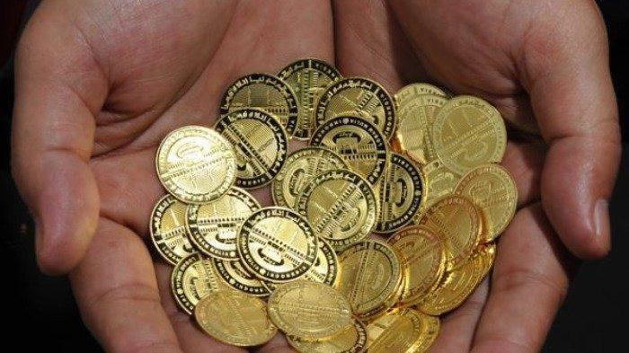 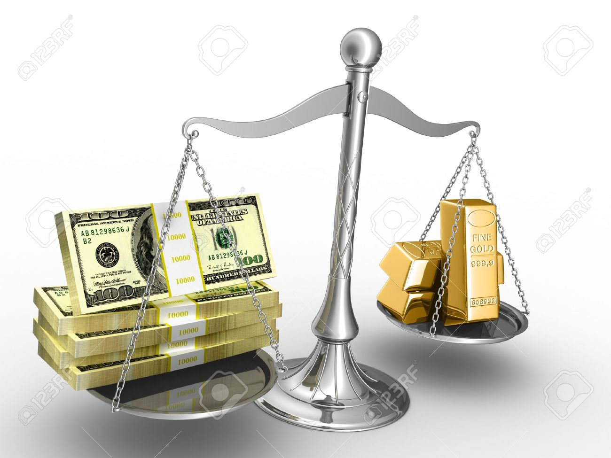
-
Jenis Ekonomi
-
Mikro Ekonomi: Analisis unit kecil seperti konsumen dan perusahaan, termasuk struktur pasar
(kompetisi sempurna, monopoli, oligopoli seperti telekom di Indonesia), market failures (externalitas
seperti polusi, public goods seperti jalan tol), price controls (ceilings/floors), dan consumer/producer
surplus. Contoh: Di pasar sayur, kompetisi tinggi turunkan harga; tapi monopoli listrik (PLN) butuh
regulasi
- Makro Ekonomi: Lihat skala besar seperti negara, termasuk GDP (misalnya, GDP Indonesia 2023
~Rp16.000 triliun), inflasi dan pengangguran (tipe: siklis, struktural), business cycles (ekspansi,
resesi), aggregate demand/supply, fiscal policy (pajak dan subsidi seperti pupuk di Indonesia),
monetary policy (BI via suku bunga), dan economic growth via investasi/technology. Contoh:
Pandemi COVID sebab resesi stimulus pemerintah dorong recovery
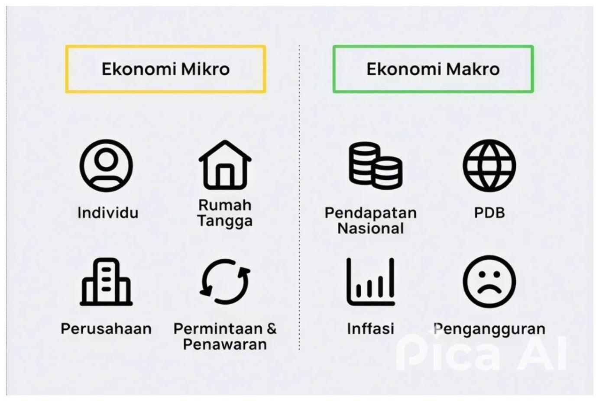
-
Sistem Ekonomi
-
Ekonomi Pasar: Harga oleh demand-supply, kompetisi bebas. Contoh: AS.
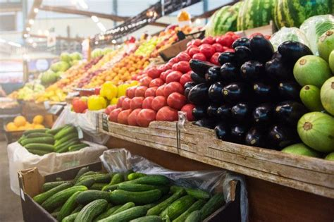
-
Ekonomi Terpusat: Pemerintah kontrol total. Contoh: Kuba.

-
Ekonomi Campuran: Gabung pasar dan pemerintah. Contoh: Indonesia.
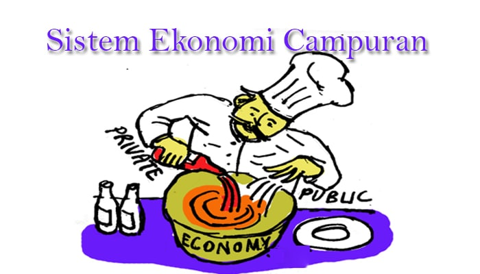
-
Ekonomi Internasional, Personal Finance, dan Pemain Utama
-
Emerujuk pada interaksi ekonomi antar negara, termasuk perdagangan, investasi, dan kebijakan yang
memengaruhi aktivitas ekonomi global. Ini mencakup perbedaan sumber daya, preferensi konsumen,
dan faktor-faktor seperti nilai tukar, kebijakan perdagangan, serta pasar keuangan internasional.
Dalam konteks sistem ekonomi, ekonomi internasional sering kali beroperasi di bawah campuran
kapitalisme pasar bebas dan ekonomi terencana, di mana negara-negara seperti AS mewakili
kapitalisme sementara China menggabungkan elemen sosialis dengan pasar terbuka. komponen
utamanya meliputi mata uang global (seperti dolar AS yang mendominasi), perdagangan barang dan
jasa, serta organisasi seperti IMF dan World Bank yang mengatur stabilitas ekonomi.
Contoh :
-
Perdagangan Global dan Net Exports : Analisis bagaimana ekspor bersih memengaruhi ekonomi
nasional, seperti bagaimana surplus perdagangan China mendukung pertumbuhan ekonominya
sementara defisit AS mendorong inovasi teknologi.
Dalam konteks saat ini, negara-negara seperti AS, China, Jerman, Jepang, dan India mendominasi
berdasarkan GDP, di mana perdagangan antar mereka mendorong pertumbuhan global.
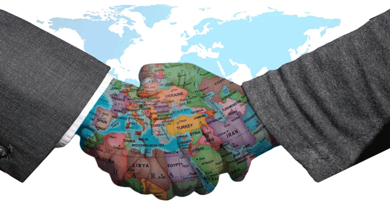
-
Personal Finance : melibatkan pengelolaan keuangan individu, termasuk penganggaran, tabungan, investasi, dan
perlindungan aset, yang dipengaruhi oleh sistem ekonomi lebih luas seperti kebijakan pajak, inflasi,
dan pertumbuhan ekonomi. Dalam sistem ekonomi, ini sering kali berinteraksi dengan faktor makro
seperti suku bunga dan kebijakan pemerintah, di mana ekonomi pasar bebas mendorong investasi
pribadi sementara ekonomi terencana mungkin menekankan tabungan kolektif.
ini juga mencakup literasi keuangan untuk menghindari jebakan seperti hutang berlebih, dan dampak
dari kebijakan ekonomi seperti pemotongan pajak yang meningkatkan pendapatan disposable
Contoh :
-
Penghematan dan Dana Darurat: Dalam sistem ekonomi yang tidak stabil, seperti selama krisis
2008, individu disarankan membangun dana darurat dan berinvestasi dalam pendidikan untuk
meningkatkan human capital, yang relevan untuk ekonomi, keuangan pribadi, dan karir.
Misalnya, tabungan pendidikan atau dana pensiun membantu individu menavigasi fluktuasi ekonomi.

-
Ekonomi melibatkan interaksi berbagai pihak :
Pemain Utama : Konsumen (maksimalkan utility), produsen (maksimalkan profit), pemerintah
(regulator via pajak/subsidi), pasar (tempat transaksi). Tambahan: Entrepreneurs (pengusaha
inovatif).
-
Konsumen (maksimalkan utility)
Konsumen adalah individu atau rumah tangga yang membeli barang dan jasa untuk memenuhi
kebutuhan atau keinginan, dengan tujuan memaksimalkan kepuasan (utility) berdasarkan anggaran
mereka. Mereka membuat keputusan berdasarkan harga, kualitas, dan preferensi pribadi, yang
memengaruhi permintaan di pasar. Dalam sistem ekonomi, konsumen mendorong dinamika pasar
melalui pola konsumsi mereka
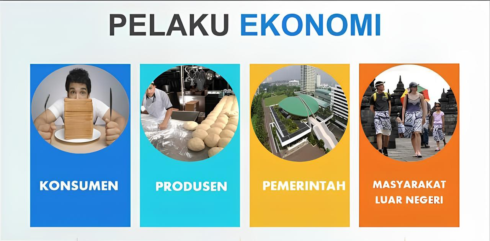
-
Isu Kontemporer
-
Ketidaksetaraan pendapatan
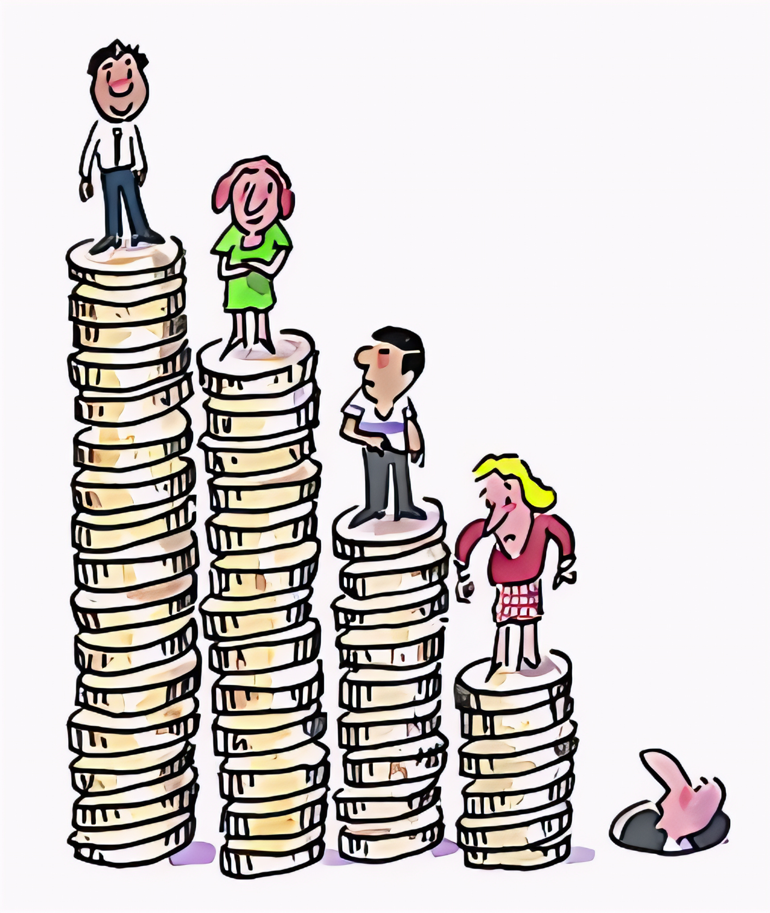
-
ekonomi lingkungan (carbon tax)
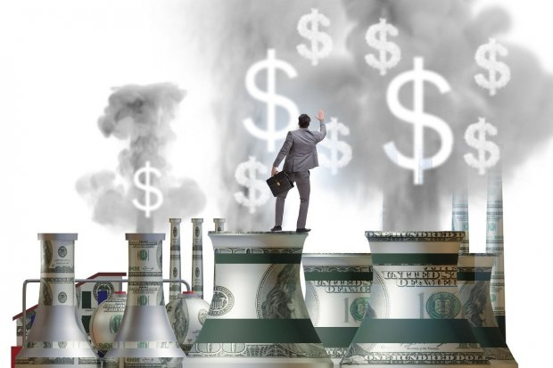
-
globalisasi
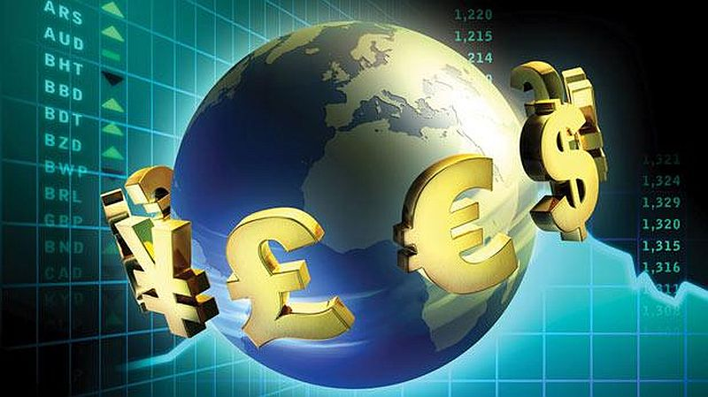
-
Pemerintah atasi via redistribusi (pajak progresif)
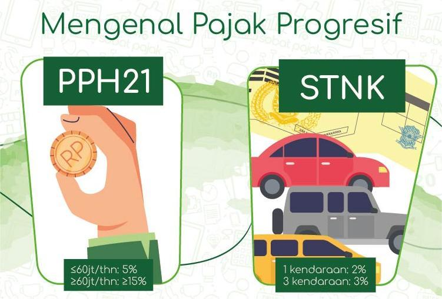